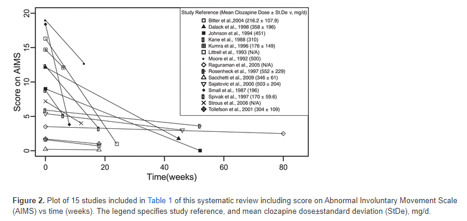

25 지연성 운동장애
25.1 지연성 증후군의 개요
25.1.1 개념의 역사
지연성 운동이상증(tardive dyskinesia)은 항정신병 약물의 도입 이후 가장 비극적인 부작용이라 아니할 수 없다. 비록 생명을 위협하는 부작용은 아니지만, 빈도가 꽤 높은 편이며, 환자들의 사회적/직업적 기능 발휘를 막고, 삶의 질을 떨어뜨리며, 무엇보다도 평생토록 타인의 눈길에서 숨어살 수 밖에 없도록 만들었다. 정형 약물 시대에 지연성 운동이상증의 발생 빈도는, 약물에 1년 노출될 때마다 2~5%에 달할 정도였으며, 환자들이 수년 동안 유지치료를 받아야 한다는 것을 고려할 때 전체적인 유병률은 15~20%에 달하였다.[1,2] 지연성 운동이상증이 생겼다고 해서 환자가 직접 담당 의사를 고소하는 일은 거의 없지만, 이는 점점 문제가 될 수 밖에 없다.[[3]]1 의사들은 치료를 시작하기 전에 지연성 운동이상증의 위험을 환자에게 알리고 동의를 구했다고 항변할 수 있지만, 실제 임상에서 상세히 설명하거나 서면 동의를 받는 일은 극히 드물다. 급성 정신병적 상태에 놓인 환자가 제대로 합리적인 판단을 할 수 있을 지도 의문이며, 과연 이런 상태에 놓인 환자가 약물 치료를 거부할 권리를 행사할 수 있는 지도 논란의 여지가 있다. 급성 상태를 벗어난 환자라고해도 이런 부작용에 대한 설명을 들었다간 치료를 거부할 것이 뻔하기 때문에, 의사들은 그저 얼버무리기 쉽상이다.
1 리스페리돈을 복용한 후 지연성 운동이상증을 일으킨 한 환자가 약물을 제조, 판매하는 Johnson & Johnson 사에 대해 소송을 제기하였다. 하급 법원은 피고가 잠재적 위험을 제대로 고지하지 않았다고 판단하여 원고에게 이백만불의 배상금을 지급하라고 판결하였으나 2017년 미시시피주 대법원은 약물사용설명서에 기입된 내용으로 충분한 경고가 이루어진 셈이라고 무죄판결을 내렸다. 그러나 여전히 비정형 항정신병 약물이 지연성 운동이상증의 위험이 낮다고 기술한 것이, 환자나 의사들을 오도하고 있는 것이 아니냐는 반론이 제기되었다.[4]
DSM-5에서는 지연성 운동이상증에 대해 “항정신병 약물을 적어도 몇 달 이상 복용한 후 나타나는 혀, 얼굴 아래쪽과 턱, 사지(때로는 인두, 횡격막, 몸통 근육까지도 포함)의 불수의적 움직임이 적어도 몇 주 이상 지속되는 경우”라고 설명하고 있다. 항정신병 약물을 복용한 후 안면근육의 불수의적 이상운동이 나타난 최초의 사례는 이미 1957년에 보고되었다.[5] 1964년에는 약물 복용 후 상당한 기간이 지난 후에야 비로소 나타나기 시작한다2는 의미를 담아 지연성 운동이상증(tardive dyskinesia, TD)라는 명칭이 붙여졌다.[6] 처음에 TD는 안면부 특히 입주변과 혀의 리드미컬한 반복운동(choreiform) 혹은 느릿느릿 꿈틀거리는 (athetoid) 운동만을 의미하였으나3, 이내 좀더 광범위한 운동이상증을 포함하게 되었다. 1962년 Druckman 등은 두경부 근육이 지속적으로 수축된 환자를 보고하였고[7], 1973년 Keegan과 Rajput[8]은 지연성 근긴장증(tardive dystonia)이라는 용어를 제안하였다. 지연성 좌불안석(tardive akathisia)에 대한 증례 역시 1960년대 이후 꾸준히 보고되었으나, 이 개념과 용어가 문헌에 등장하기 시작한 것은 1980년대 이후였다.[9]
2 “Tardive”는 라틴어 “Tardus”에서 유래되었으며, “늦은, 굼뜬”이라는 뜻이다.
3 Oral-buccal-lingual dyskinesia
이처럼 고전적 TD 이외에도 점차 개념이 확장되었고, 한 환자에서 여러가지 지연성 운동이상이 동시에 나타나는 경우가 잦았기 때문에 용어 사용에 어려움이 초래되었다. 일부 저자들은 지연성 근긴장증과 지연성 좌불안석을 아울러 TD라고 칭하기도 하였으나, 그러면 고전적 TD와 구분이 어려웠다. 이에 모든 지연성 운동 문제를 가리키기 위해 지연 증후군(tardive syndrome,TS)이라는 포괄적 용어가 제안되었다.[10] TS는 위에 언급한 세가지 현상 뿐 아니라, 항정신병 약물 복용 후 처음 발생한 틱(tardive tourettism), 근간대성 발작, 진전(tardive tremor), 통증(tardive pain), 항정신병 약물 금단 이상운동증 4등 다양한 운동 이상을 아우른다.
4 Neuroleptic withdrawal-emergent dyskinesia: 약물을 끊고 나서 시작되는 운동이상증. 대부분은 2달 내에 저절로 소실되기 때문에 이보다 오래 지속될 때만 지연성 운동이상증에 포함시킨다.[11] 약물을 끊은 것이 원인이라기 보다는 TD가 이전부터 있어왔지만, 약물의 D2 차단 효과때문에 가려져 있다가(masking) 약을 끊으니까 드러난(unmasking) 것으로 여겨진다.
TS의 정의를 분명히 내리기는 어렵다. “지연(tardive)”이란 의미는 약물을 투여한 지 적어도 몇 달 지난 후에 나타난다는 의미를 내포하고 있지만, 실제 임상에서는 더 짧게 사용한 후에도 증상이 나타날 수 있다. 따라서 “늦게 나타난다”는 것보다는 “약물을 끊어도 지속된다”가 TS의 핵심인 듯 하다. 즉 원인 약물을 끊으면 서서히 해결되는 약물유발 운동이상(neuroleptic induced movement disorder)과는 달리, TS는 지속적이고 돌이킬 수 없다. 정확한 시간 기준은 정해지지 않았지만, 문헌에서는 대체로 약물을 적어도 3달 이상 투여한 후에 나타나는 운동이상으로 원인 약물을 끊어도 1달 이상 증상이 지속되는 사례만 TS에 포함시키고 있다.[12]
25.1.2 발병기전
TS는 고전적으로 장기간에 걸친 D2 수용체 차단으로 말미암아 수용체가 보상적으로 상향 조정되면서, 도파민 신호에 대한 과민화(dopamine supersensitivity)가 발생하여 생긴다고 설명되어 왔다. 기저핵의 간접 경로(indirect pathway)는 불필요한 근육의 움직임을 억제하는데, 보통은 도파민 신호에 의해 억제된다. (09-02 참조) 따라서 도파민 과민화로 간접 경로가 지나치게 억압되면, 이상 운동이 전혀 제어가 되지 않아 외적으로 표출하게 된다.
최근에는 단순한 자극과 억제라는 이분법이 아니라, 시냅스 가소성의 차원에서 TS의 발생을 설명하려는 학자들이 늘어났다. 기저핵의 직접/간접 경로는 정해진 프로그램대로 작용하는 것이 아니라, 이전 운동의 실행 결과를 끊임없이 평가하여 새로운 운동 프로그램으로 업데이트한다. 만약 D2 수용체 차단과 과민화가 기저핵과 선조체의 학습 과정에 혼란을 일으키면, 잘못된 운동 프로그램이 수정되지 못한 채 영원히 반복된다. 이 과정에 산화 스트레스 또한 일조할 수 있다. 도파민 활성이 상향 조정되면 자연히 도파민 회전율이 증가되면서 자유기(free radical) 생성이 늘어나 신경 독성을 유발한다. 특히 자유기를 제거하는 효소인 MnSOD5 변이가 TS 위험을 높이는 것과 연관이 있다.
5 Manganese superoxide-dismutase
비정형 약물은 과거에 비해 TS의 위험이 현저하게 줄어들었다고 평가되는데, 이는 5-HT2A,2C 길항 작용과 5-HT1A 효현 작용을 통해 지나친 D2 차단과 그로 인한 과민화를 막기 때문으로 설명된다.[13] D3, 5-HT2A,2C 유전자 변이가 TS 발병률을 높이는 것은 이런 가설을 뒷받침한다.[14]
25.1.3 역학
TS의 정확한 발생률과 유병률을 알기는 매우 어렵다. 적용한 진단기준에 따라, 사용한 약물의 종류 및 용량에 따라, 사용 기간에 따라 무척이나 다른 결과를 보인다. 따라서 발표된 결과를 해석할 때는 이러한 불확실성을 감안해야 한다. 1977년 Kane은 TS의 유병률을 체계적으로 조사하기 위해 Hillside study를 시작하였다. 여기에는 908명의 정형 약물을 처방받고 있는 조현병 환자가 포함되었는데, 그 결과 TS의 누적발생률은 항정신병 약물에 1년 노출될 때마다 5% 정도인 것으로 추산되었으며, 유병률은 5년 노출 시 27%, 10년 후 43%, 15년 후 52%로 나타났다.[1,15] 비정형 약물이 도입되면서 TS의 비율이 크게 낮아질 것으로 기대되었고, 실제로 비정형 약물에 노출된 환자의 TS 유병률이 13.1% 정도에 그친다는 고찰도 있었다.[16]
한편 일부 학자들은 정형 약물과 비정형 약물의 차이가 선전하는 것만큼 뚜렷한 지에 대해 의문을 품기 시작하였다. 제약사의 후원을 받지 않은 대규모 역학조사였던, CUtLASS6나 CATIE7 연구에서도 두 약물군 사이에 TS의 빈도가 크게 다르지 않는 것으로 나타났다.[17] 그러나 이런 연구들은 처음부터 비정형 약물만 사용했던 환자와 이전에 정형 약물을 사용했다가 비정형 약물로 바꾼 환자를 구분하지 않고 있다. 2017년에 이루어진 메타 분석[18]에서 이러한 점이 확연히 드러난다. 이 연구에서 TS 유병률은 정형 약물군이 30%, 비정형 약물군이 20%로 유의한 차이가 있었다. 특히 초발때부터 비정형 약물만 써왔던 군의 유병률은 7.2%로, 과거에는 정형 약물을 사용했다가 약을 바꾸었던 군의 23.4%보다 크게 낮았다. 한편 TS의 위험 인자로 꼽히는 것은 고령, 여성, 이전 뇌 손상 병력, 이전 약물유발 운동이상 병력이며, 인종도 크게 작용한다. 아시아인은 타 인종에 비해서 꽤 낮은 편이며, 미국과 아프리카의 흑인, 중동 출신의 환자는 위험이 높다.[12] 소아-청소년에 환자가 없는 것은 아니지만, 고령일수록 발생률이 높아질 뿐더러 약물 투여 개시 후 증상이 나타나는 시간간격도 짧다. 이는 아마 누적된 뇌손상과 신경퇴행이 TS의 위험을 높이는 것으로 예상된다.
6 Cost Utility of the Latest Antipsychotic Drugs in Schizophrenia Study (CUtLASS)
7 Clinical Antipsychotic Trials of Intervention Effectiveness (CATIE)
정형과 비정형 약물의 차이 이외에도 개별 약물에 의한 차이가 조금씩 있다. 클로자핀은 확연하게 TS 위험이 낮으며, 중국에서 집계된 연구이긴 하지만 발생률이 약 4%에 지나지 않는 것으로 보고되었다.[19] 이에 비해 2년 노출 후 TS 발생률이 리스페리돈은 7.2%, 올란자핀은 11.2% 였다.[20] 정확한 수치는 얻어지지 않았지만, 아리피프라졸과 지프라시돈의 TS 발생률 역시 매우 낮은 것으로 추정된다.
일반적으로 TS가 한번 생기면 비가역적이라고 설명되지만, 실제 임상에서는 저절로 소실되는 경우가 꽤 있다. 위에 언급한 Hillside study에서 연간 누적 발생률이 5%라면, 연간 자연소실율도 2% 정도 되는 것으로 나타났다.[15] 이탈리아에서 행해진 연구에서는 3년간의 관찰 기간 중 28.6%의 환자가 회복했다고 집계되었다.[21] 1993년 발표된 Yale Tardive Dyskinesia Study의 결과에서도 TS의 누적 발생률이 1년에 5.3%였던 반면, 자연관해율은 2.5%로 나타났다.[2] 그러나 이보다 훨씬 낮은 관해율을 보고한 연구들도 있어서 예후가 불량한 것은 변하지 않는 것 같다.[22] 표면적으로는 원인 약물을 끊고 안 끊고가 관해율에 큰 차이를 가져오지 않는다. 그러나 약물을 계속 사용하면 이상 운동이 억눌려져 있는 것 뿐으로, 언젠가는 악화되어 표면으로 드러나게 마련이다. 조금이라도 치유를 바란다면 약물을 끊는 수 밖에 없다.
25.2 임상 양상
25.2.1 지연성 운동이상증
환자들은 주로 안면부 특히 입주변과 혀의 리드미컬한 반복운동(choreiform) 혹은 느릿느릿 꿈틀거리는(athetoid) 운동을 보인다. 입속에서 혀를 우물거리는 증상은 틀니를 오래 낀 노인들의 orofacial dyskinesia와 매우 흡사하다.[23] 입과 혀의 불수의 운동때문에 언어장애가 올 수 있으나[24], 근육이 무언가에 닿으면 비정상적인 움직임이 멈추기 때문에 음식을 먹는데는 큰 지장이 없다. 몸통을 침범하면 몸을 앞뒤로 흔들거나, 골반을 반복적으로 회전시키기도 한다. 몸통과 다리를 침범하면 보행에 문제를 일으킬 수도 있다. TD는 운동이상증에 멈추지 않으며, 입 부위에 타는 듯한 통증같은 이상 감각 현상을 유발하기도 한다.[25] 통증이 주로 오는 것은 지연성 통증(tardive pain)이라고 한다.[26]
TD와 감별해야 하는 것은 무엇보다 가역적인 약물유발 운동이상이다. 약물유발 파킨슨증에서의 떨림은 TD의 전형적인 느릿한 무정위 운동에 비해 리드미컬하고 빠르다. 파킨슨증은 항정신병 약물을 시작한 지 얼마 안 되어 혹은 증량할 때 발생하며, 약물의 용량을 줄이면 감소한다. 반면 TD는 약물 투여 후 한참 있다가 발생하며, 항정신병 약물의 용량이 감소될 때 종종 악화되고, 용량이 증가하면 오히려 개선된 것처럼 보일 수 있다. 또한, 벤즈트로핀과 같은 항콜린성 약물은 TD를 악화시킬 수 있다. 이외에 감별해야할 진단으로는 조현병 환자의 상동행동, 노인의 자발적 안면 운동 이상(orofacial dyskinesia), 틀니 사용과 관련된 구강 운동 이상(edentulous Dyskinesia), 하악 근육 긴장 이상증(oromandibular dystonia), 본태성 진전(essential tremor) 환자의 머리 흔들기8 등이 포함된다.
8 본태성 진전 혹은 파킨슨병 환자 중에서 머리나 목, 몸통을 앞뒤, 좌우로 흔드는 경우가 있는데, 이를 titubation이라고 한다.
환자가 이상 운동을 호소하거나 제 3의 관찰자에게 이상 운동이 관찰되면, TS의 가능성을 염두에 두고 다른 신경학적 질환들을 감별하게 된다. 증상은 환자의 감정 상태나 스트레스에 따라 변화 폭이 크기 때문에 반복적으로 검사할 필요가 있다. TS의 심각도를 평가하는데는 AIMS (Abnormal Involuntary Movement Scale)를 가장 많이 사용한다. AIMS는 기본적으로 안정 상태의 환자를 관찰하는 것이지만, 증상이 잘 보이지 않을 때는 엄지와 검지를 빠른 속도로 맞닿게 하거나(thumb-finger tapping), 팔을 들게 하거나, 걸어보게 함으로써 증상을 “활성화” 시킬 수 있다.9
9 이런 행동들은 파킨슨병 증상을 검사할 때 주로 쓰이는 기법이다.
25.2.2 지연성 근긴장증
이 상태에서는 주로 목, 몸통 또는 얼굴이 일부 근육이 불수의적으로 수축되어 불편한 자세를 지속해야만 한다.[27] 근육이 아예 안 펴지는 것은 아니지만, 의식적으로 바로잡아도 금새 슬그머니 뒤틀린 자세로 돌아가버린다. 목 근육을 침범하면, 후경(retrocollis) 및 사경(torticollis)이 되며, 몸통을 침범하면 몸통이 앞으로 구부러진다. 평상시에는 괜찮다가 걸을 때 허리가 굽어지는 형태도 있다(dystonic gait). 흥미롭게도 뛰거나 뒤로 걸을 때는 증상이 없어지기도 한다.[28] 지연성 근긴장증은 얼굴이나 목에서 시작해서 수년간에 걸쳐 전신으로 퍼져나가는 양상을 보인다. 고령 환자는 입주변의 국소 근긴장이 흔한 반면, 젊은 환자는 전신성 혹은 사지 쪽의 근긴장이 상대적으로 빈번하다. 관해 가능성은 지연성 운동이상증보다도 더 낮아 10~15% 미만인 것으로 보고된다.[29]
25.2.3 지연성 좌불안석
지연성 좌불안석이라고 해서 급성 증상과 크게 다르지는 않다. 대부분의 좌불안석은 약물 사용 초기에 국한되지만, 만성 좌불안석도 있기 때문에 감별이 결코 쉽지는 않다. 결국 좌불안석이 오래 지속되면서 약물을 끊어도 사라지지 않으면 지연성 좌불안석이라 진단한다. 보통 지연성 운동이상증 또는 지연성 근긴장증과 함께 오는 경우가 많다.[30,31]
25.2.4 그 밖의 지연성 증후군
항정신병 약물을 투여한 후 처음으로 나타난 틱이 약물을 끊어도 지속될 수 있다. 운동 틱과 음성 틱이 함께 나타나면 지연성 뚜렛 증후군이라고 한다. 진짜 뚜렛 증후군과는 달리, 주의력 결핍/과잉행동 장애 및 강박 증상은 동반되지 않는다. 지연성 떨림도 생길 수 있는데, 이는 파킨슨증에서의 떨림보다 더 거칠고, 폭이 크다. 본태성 떨림이나 파킨슨증 치료제에는 반응하지 않는다. 근간대성 경련은 간헐적이고 반복적으로 발생하는 짧은 불수의적 근육 수축을 말하는데, 이 역시 항정신병 약물 투여 한참 후에 발생할 수 있다.[27,32]
장기간에 걸친 항정신병 약물 사용 후에 생식기 부위 및 입과 혀 부위의 지속적인 통증이 생길 수 있다. 이 환자들은 대체로 다른 지연성 증후군 증상을 동반하고 있었으며, 통증에 매우 집착하는 모습을 보였다.[26] 일부 학자들은 지연성 좌불안석의 감각 이상을 환자가 통증으로 인식하는 것이라 간주하기도 한다.
드물게 약물유발 파킨슨증이 약물을 끊어도 해소되지 않는 경우가 있다. 안정시 진전, 경직, 서동증이라는 특징적인 증상 때문에, 지연성 운동이상증과는 구분이 된다. 하지만 이는 약물로 인해 비가역적인 상황이 발생했다기보다는, 우연히 약물 투여 중인 환자에서 특발성 파킨슨병이 발생했다고 보는 것이 옳을 것 같다.[10,33]
25.3 치료
25.3.1 고전적 치료
TS가 발생하였을 때 가장 먼저 검토해야하는 것은 약물을 끊을 것이냐 말 것이냐다. 원인 약물을 끊는다고 TS가 금방 좋아지는 것은 아니지만, 그래도 회복 가능성을 높일 수 있다. 만약 현재 증상이나 재발 위험성에 비해, 용량이 과하거나 뚜렷한 근거없이 여러 종류의 약물이 사용되고 있다면 최대한 약물을 감량한다. 물론 이를 결정할 때는 환자 본인이 느끼는 불편감과 재발의 위험을 잘 저울질 해야 한다.
TS에 효과를 인정받거나, 표준 치료로 자리잡은 치료법은 없지만, 고전적으로 세가지 전략이 사용되었다. 이는 1) 정형 약물을 사용하고 있었다면 비정형 약물로 바꾸거나, 2) 클로자핀으로 바꾸거나, 3) 오히려 항정신병 약물의 용량을 늘여 증상을 덮는(masking) 것이다. 그러나 클로자핀을 제외하고는 비정형 약물로 바꾼다 하더라도 일단 발생한 TS가 회복된다는 증거는 없다. 항정신병 약물을 끊거나 줄이면 일시적으로는 증상이 악화될 수 있지만, 이 방법 말고는 자연회복 가능성을 높일 수 없다. 학자들 사이에는 여전히 TS의 비가역성에 대해 이견이 많고, 약을 끊거나 줄인다고해서 회복 가능성이 높아지느냐에 대해서도 확실한 답이 나와있지 않다. 항정신병 약물을 아예 끊으면 모를까 용량을 줄이는 것은 별 의미가 없을 것이라는 견해가 대다수이다.10
10 항정신병 약물을 끊거나 감량하는 것이 TS를 치료하는데 과연 도움이 되느냐는 문제는 반복해서 Cochrane review의 주제가 되어왔다. 하지만 2018년에 발표된 review에서도 연구 데이터가 부족하고 질이 낮아 어떠한 결론도 내기 어렵다고 얼버무리고 있다.
따라서 증상 때문에 항정신병 약물을 아예 끊을 수 없다면 거의 유일한 방법은 클로자핀으로 바꾸는 것이다. 물론 클로자핀도 TS를 유발한다는 보고가 있지만, 어떤 약물과 비교해도 발생 가능성이 현저히 낮다. 실제로 TS 증상이 심한 경우 클로자핀으로 바꾸는 것만으로도 상당히 증상이 경감된다.[34] 연구에 따라선 클로자핀으로 바꾸고 불과 4주 만에 AIMS가 50%이상 감소했다고 하며, 심한 TS 환자에서도 4달만에 80% 이상의 환자가 호전을 보였다.[35]

클로자핀을 사용하면 TS 증상이 조금 경감된다고 했을 때, 이런 효과가 정말 치료적인 것인지 아니면 그저 증상을 덮는(masking) 것인지 의문이 들지 않을 수 없다. 만약 클로자핀을 중단했을때, TS 증상이 원상태로 돌아온다면 이는 그저 잠시 보이지 않게 한 것일 뿐이다. 관련된 연구는 많지 않지만, 안타깝게도 연구 결과는 후자를 지지한다. 클로자핀 치료로 TS 증상이 사라진 환자들도 약을 끊으면 다시 증상이 돌아오곤 하였다.[37–40]
만약 환자가 원하지 않거나 혈액학적 부작용때문에 클로자핀을 사용하기 어려운 경우 최선의 대안은, 역시 도파민 친화도가 낮은 퀘티아핀 정도이다. 이후에 도입된 일로페리돈, 아세나핀 등의 신약 들은 정형 약물에 비해서 확실히 TS 위험이 낮다고 하나, 이들 약물로 교체했을 때 TS 증상이 호전되는 지에 대해서는 아직 자료가 축적되지 않았다. 다만 루마테페론은 D2 친화도가 클로자핀보다도 낮은 편이라 TS 치료를 위해서도 시도할 가치가 있어 보인다.
TS가 D2 수용체의 상향 조정때문에 발생한다면, 오히려 강력한 D2 차단제로 늘어난 수용체들을 차단시켜 버리면 TS 증상이 호전될 수 있을 것이다. 실제로 정형 약물을 써서 D2를 안정적으로 차단하면 일시적인 호전을 꾀할 수 있다.[41] 그러나 이러한 전략은 효과가 오래가지 못하며, 보상적으로 D2 수용체가 좀더 상향 조정되어버리기 때문에 바람직한 치료는 되지 못한다. 하지만 TS 증상때문에 고통이 심하거나 일상 생활이 어려울 정도라면 시도해볼만하다.[42]
25.3.2 VMAT2 억제제를 이용한 치료
Tetrabenazine은 경쟁적 VMAT211 억제제로서 2008년 미국 FDA로부터 헌팅턴 병의 무도 증상을 치료하는데 승인을 받았다. Tetrabenazine은 상당히 오래된 약물로 이미 1972년부터 TD에 대한 임상시험이 이루어졌고, 90년대까지도 연구가 이어졌다.[41,43] 그러나 CYP2D6에 의해 신속히 분해되어버리기 때문에 반감기가 짧고 약물 상호작용 가능성이 높으며, 전반적으로 안정성이 떨어져 표준 치료로 자리잡기는 무언가 부족해보였다.
11 Vesicular monoamine transporter 2 (VMAT2): 도파민을 비롯한 단가아민을 시냅스 전 뉴런의 소포에 저장하는 작용을 하는 효소. 이 효소를 억제하여 도파민이 소포에 포장되지 못하면, 자연히 도파민 분비량이 줄어들어 이상 운동이 나타날 가능성이 줄어든다.
제약사들이 tetrabenazine을 대체할 수 있는 VMAT2 억제제 개발에 매달린 결과, 2017년 deutetrabenazine과 valbenazine이 동시에 미국 FDA의 승인을 받았다. 두 약물도 원래는 헌팅턴 병 치료제로 개발되었으나, 헌팅턴 병은 물론 지연성 운동이상증 및 뚜렛 증후군에도 효과가 있는 것으로 보인다. Valbenazine과 그 대사 물질([+]-α-HTBZ)은 반감기가 24시간 정도이기 때문에 작용 시간이 짧은 tetrabenazine의 약점을 보완할 수 있다. 유효 용량인 80mg/day에서 6주간 사용하면 AIMS 총점이 약 2~3점 감소하는 것을 기대할 수 있다.[44]
Deutetrabenazine은 tetrabenazine의 분자 구조 중 일부 수소를 중수소(deuterium)를 바꿔 반감기를 늘린 약물이다. 역시 유효 용량인 12~48mg/day로 12주간 사용하면 AIMS 3점 정도의 감소를 예상할 수 있다.[45] Deutetrabenazine과 valbenazine 모두 내약성이 매우 높아서 중도 탈락한 환자는 거의 없었다. Deutetrabenazine은 Austedo®라는 상품명으로 한국에도 출시가 되었으나, 약가가 무척 높고 희귀약으로 지정되어 있다. 아마 현실적으로 TS에 사용하기 위해선 상당한 기간을 기다려야 할 것 같다.
TS로 고통받고 있는 환자의 입장에서 VMAT-2 억제제는 새로운 희망으로 다가온다. 그러나 아직 써본 사례가 많지 않기 때문에, 실제 임상 상황에서 얼마나 효과적일 것이며, 또한 장기적인 영향이 어떠할지는 미지수이다. 게다가 VMAT-2 억제제가 시냅스 전 뉴런의 도파민을 고갈시켜서 TS 증상을 줄이는 것이라면, 조현병의 음성/인지 증상에 어떤 영향을 미칠 지도 우려가 된다.12 한편 비용-효율성 문제와 의료보험 적용 여부 들은, TS를 겪는 만성 조현병 환자들이 대부분 저소득층이라는 것을 고려할 때 의료윤리적 문제까지도 제기한다.
25.3.3 그 밖의 치료법
2013년에 미국 신경학회는 지연성 운동이상증의 치료 지침을 내놓았다.13 워낙 축적된 근거가 미미하였기 때문에 대부분의 치료는 “자료가 불충분함(level U)” 판정을 받았지만, 개중 clonazepam, ginkgo biloba, amantadine 그리고 tetrabenazine은 추천할만한 근거가 있는 것으로 지목하고 있다. 공식적인 업데이트는 아니었지만 2018년에 AAN 지침에 대한 자료 보완이 이루어졌다.[49] 이에 따르면 지연성 운동이상증에 조금이나마 근거를 확보한 치료법은 표 __와 같다.
| American Academy of Neurology (AAN) guideline | ||
|---|---|---|
| 2013 | 2018 | |
| Deutetrabenazine, valbenazine | A | |
| Tetrabenazine | C | C |
| Clonazepam | B | B |
| Ginkgo biloba | B | B |
| Amantadine | C | C |
| Electroconvulsive therapy | U | U |
| Deep brain stimulation | U | C |
| Withdrawing or switching antipsychotics | U | U |
VMAT-2 억제제를 제외하고 level B와 C를 받은 치료법은 clonazepam, ginkgo biloba, amantadine 그리고 심부뇌자극 정도이다. Clonazepam은 GABA 효현제로서 당장의 증상은 감소시키지만, 효과가 단기간 뿐으로 내성이 쉽게 생기며, 의존 및 남용의 가능성이 크다는 것이 단점이다.[50] Clonazepam을 제외한 벤조디아제핀은 그나마도 효과가 없다. Ginkgo biloba(은행나무)는 항산화 효과를 지니며 2016년 발표된 메타 분석에서 효과가 있는 것으로 보고되었다.[[51]]14 Amantadine은 약물유발 파킨슨증에 사용되는 약물 중에서 유일하게 TS를 악화시키지 않는 약물로, TS 증상을 조금 호전시키기도 한다.[52] 반면 근이완제인 baclofen은 현재까지도 꽤 많은 의사들이 사용하고 있지만, 1970년대에서 80년대까지 간간히 이루어진 연구에서 별다른 효용성을 보이지 못했기 때문에 level U 판정을 받았다.[53,54]
14 문제는 메타 분석의 저자도 중국인이고, 분석에 사용된 연구도 모두 중국에서 행해진 것이라 일반화하는데 문제가 있다.
TS의 발생 자체를 억제하는 것은 아니지만, 보툴리늄 주사(botox 주사)를 통해 증상이 겉으로 드러나지 않게 할 수는 있다.[55] 보툴리늄 주사는 1989년에 미국 FDA에서 안검경련을 비롯한 안면마비 치료에 승인을 받은 보편적이고 안전한 치료법이다. 비록 신경학회 지침에서는 level U 였지만, 파킨슨증을 비롯한 다양한 운동이상증에 우수한 효과를 발휘하였고, TS 특히 지연성 근긴장증에도 긍정적인 결과를 보였다.[56,57] 하지만 지연성 근긴장증과는 달리 지연성 운동이상증에는 뚜렷한 효과를 내지 못하고 있다.[58]
이외에 실험적인 치료법으로는 전기경련 치료 및 심부뇌자극술을 들 수 있다. 비록 통제된 연구는 전혀 없이 증례 보고에 그치고 있지만, 전기경련 치료를 통해 난치성이던 운동이상증이 경감되었다는 증례가 꾸준히 보고되고 있다.[59,60] 이에 비해 심부뇌자극술15 은 통제된 연구가 진행되었으며 결과도 긍정적이다. 주로 안쪽 담창구(globus pallidus interna, GPi) 혹은 시상하핵(subthalamic nucleus)을 자극하는데, 추체외로 증상은 물론 지연성 운동이상증에도 유의한 효과가 있다.[61] 다만 수술이 복잡하고 비용이 많이 들며, 전극의 위치를 정확히 잡기 어려워 실패하는 경우가 많다. 전극이 정확히 위치하더라도 입력된 전류가 주변 조직으로 흘러넘치면서 원하지 않는 신경학적 부작용을 일으키는 경우가 많다. 하지만 이런 문제들은 수술 기법의 부단한 향상을 통해 해결되리라 예상된다.
15 심부뇌자극술 (deep brain stimulation): 이미 1990년대에 개발된 수술법으로 원인 불문하고 다양한 근긴장증(dystonia) 및 운동이상증(dyskinesia)에 효과를 발휘하였다. MRI를 통해 깊이를 확인한 후 전극을 뇌의 특정 부위에 고정시키고, 수술 부위가 아물면 재수술을 통해 조절기와 배터리를 체내에 삽입한다. 수술 후 환자 개인에게 가장 효과적인 자극 프로그램을 찾는 작업을 하며, 일단 프로그램이 설정되면 24시간 자극을 켜놓거나, 필요할 때만 자극을 켜놓는 식으로 생활한다.
과거 문헌에는 난치성 지연성 운동이상증에 담창구 일부를 전기로 소각시키거나(pallidotomy), 아예 담창구를 제거하는 수술(pallidectomy)을 시행한 사례가 종종 발견된다.[62–64] 이 수술을 지지하는 의사들은 비교적 안전하며, 난치성 근긴장증 및 운동이상증에 효과적이라고 주장하고 있지만, 심부자극술이 보편화되면서 이런 과격한 치료는 점점 드물어지고 있다.
25.4 요약 및 결론
안타깝게도 TS는 한번 발생하면 비가역적일 때가 많으며, 치료에도 잘 반응하지 않는다. 무엇보다 예방이 중요하지만, 이미 발생한 경우에는 어떻게든 증상을 최소화하고, 일상 생활을 유지할 수 있도록 돕는 것이 최선의 방책이다. 이미 만성화된 환자들이기 때문인지, 정신과 의사들은 적극적 대처보다는 사용 중인 항정신병 약물의 용량과 종류를 낮추거나 끊는 것에 그치는 경우가 많다. 하지만 적어도 TS 환자에게 클로자핀으로 바꾸는 전략을 구사할 수 있으며, clonazepam, ginkgo biloba, amantadine 등을 시도해보는 것도 의미가 있다. 가까운 장래에 deutetrabenazine과 valbenazine의 처방이 보편화되면 좀더 희망을 가져볼 수 있을 것이다. 주변에 모험적이고 운동장애를 치료해본 신경외과 전문의가 있다면 심부뇌자극술을 시도해볼 수 있다.
결국 한번 생기면 치료가 곤란한 만큼, 정기적으로 항정신병 약물의 필요성을 재검토하고 불필요해 보이는 약물을 끊거나 줄이려고 애써야 한다. 특히 우울증, 불안 장애, 강박증, 신체화 장애 등에 항정신병 약물이 보조치료제로 처방되는 경우, 급성 증상이 해소되면 약물을 조만간 끊는 것이 바람직하다. 비정형 약물이라고 TS에서 안전할 것이라는 섣부른 방심이, 환자를 오랫동안 고통스럽게 만들 수 있음을 명심해야 한다.